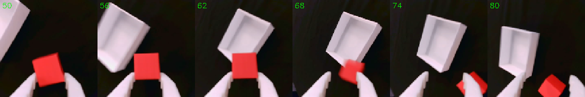
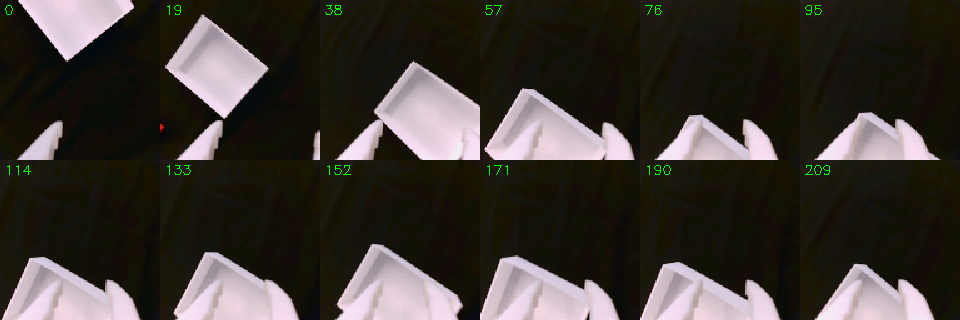
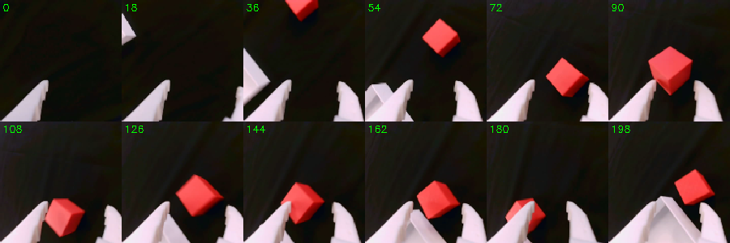

Sim-to-real, debunked
We trained a pick-and-place policy entirely in simulation and ran it on our SO-101. Most of what broke was not the physics.
The simulator in this post models our cube as a 3-gram block held by high-friction fingers. Our real cube is printed plastic that we have not weighed yet, held by smooth plastic fingers. We trained a pick-and-place policy on that physics anyway, with no real demonstrations and no fine-tuning on the arm, and ran it on our SO-101.
It missed its first four attempts. Then it put the cube in the bin five times in a row.
Contact caused one of those misses. Most of what broke, before and during that session, sat around the physics: the software between the simulator and the robot, the camera, and the simulator’s picture of our own arm. This post is that list.
01Learning by trial and error
The method is Squint, a reinforcement learning recipe from UC San Diego. The policy does not copy a human. It learns by trying. A simulator runs 1,024 copies of our arm at once; each copy attempts the task, mostly fails, and gets a score for how close it came. The policy keeps whatever raised the score. (How it works, derived end to end: Deriving Squint.)
On one gaming GPU, learning to reach a cube took two and a half minutes. Learning to pick it up and drop it in a bin took eleven and a half. Nothing it learns comes from the real world: on the arm, it sees a real cube for the first time.
02What the policy actually sees
Hold on to this for the rest of the post. At every step the policy gets a picture from the camera on its wrist, shrunk to 16 by 16 pixels, and twelve numbers: where each of its six joints is, and where each one is trying to go. From those it decides six small nudges, one per joint. Then it looks again, fifteen times a second on our arm.
No map, no list of objects, no coordinates. The cube is a few reddish pixels. So a sim-to-real gap is not abstract here: it is anything that makes those 256 pixels or twelve numbers look different on the real arm than in training, or anything that makes a nudge do something different.
03What happened
One SO-101 follower arm, a USB camera on its wrist, a table covered in black cloth. Training ran on one RTX 4080 SUPER. The trained policy has about 300,000 parameters and runs on a MacBook Air’s CPU in about half a millisecond per decision. We trained three policies, all around our own camera:
| Task | Training | In simulation | |
|---|---|---|---|
| A | reach the cube, close the gripper over it | 2 min 38 s | 100% |
| B | the same, on random dark-grey backgrounds | 2 min 6 s of training loop | 100% |
| P | pick the cube up, drop it in a bin | about 11.5 min | 100% |
| On the real arm | Result |
|---|---|
| A, cube at random spots in the training area | 11 of 11 |
| B, the same | 6 of 7 |
| P, cube and bin close together | 5 of 5 |
| P, bin 30 cm away or cube out of view | 0 of 4 |

The four misses taught us more than the training did. Everything below comes from them, and from the bugs we hit getting there.
04The plumbing broke first
Between the simulator and the robot sits a translator: code that turns the robot’s readings into what the policy expects, and the policy’s outputs into motor commands. When it is wrong, the policy is fed nonsense, often with no error at all.
- CrashThe first launch on the real arm stood the arm up and then died with a recursion error, leaving it standing with its motors on. The cause was a regression in the simulator library’s sim-to-real wrapper, nothing physical. We reported it upstream (ManiSkill #1498) and worked around it.
- GripperA version of LeRobot renamed the robot internally. The code that converts gripper readings into the simulator’s units checked for the old name, so it never ran. No error. Closed, the reading was 11 degrees off; at the open end our calibration puts it at about 22.
- JumpAfter power-up each servo’s stored target reads 0 while the joints sat 799 to 3,095 encoder ticks away (up to about 272 degrees). Turning torque on could have sent them toward 0. Fix: set every target to the current position first.
- LoadThe trained model would not load: it was saved from GPU memory, and the laptop has no NVIDIA (CUDA) GPU.
- Stale frameEach episode’s first picture was taken right after the arm returned to its start pose, before we had moved the cube. The policy’s first decision was based on where the cube used to be.
The first real failure was a software bug. After the crash, a fake arm, with the simulator standing in as its camera, reproduced it in seconds and turned up three more problems before the real arm moved again.
05The eyes
Everything the policy knows about the world arrives through that 16 × 16 picture.
Black is a camera setting, not a colour. In simulation, everything except the robot and the objects is painted pure black, like a green screen, so the policy never learns to care about the room. We laid a black cloth on the table to match. In auto-exposure, the camera brightened the dark scene until the cloth looked reddish-brown (red 186, green 110, blue 70 out of 255). Locking exposure, gain and white balance fixed it.
The lock forgets. After we unplugged the camera and moved rooms, it came back in auto-exposure: the jaws read 222 where the simulator renders 154, and the cloth read 142. Now one command restores the lock at the start of every session, and a one-line check confirms it before a run.
Match where the policy works. We first matched the camera with the arm folded at rest. But with the arm folded, the simulator hides its jaws below the table, so that comparison was invalid, and at the pose where the policy actually starts the jaws came out 29% too dark. We re-matched at the start pose, comparing the real image with the simulator’s image at exactly the same joint angles, region by region.
Real black is never simulated black. A camera compresses the range between dark and bright, so a roughly ten-to-one difference in reflected light ends up near three-to-one in pixel values (our estimate). With the jaws 20% too dark, the cloth read 18. Raising the gain until the jaws matched pushed the cloth to 75. Only the simulator’s background is truly black. We trained model B on random dark-grey backgrounds for this reason; model A, trained on black only, coped anyway.
Where the camera sits. Our wrist camera sees the gripper on the opposite side of the frame from the one Squint was designed around. By eye, after a calibration tool, it looked close enough. Measured at 16 × 16, the difference was 2.8 times the largest wobble Squint trains with. And the camera’s position is baked into the policy at training time, so calibrating it in a tool changes nothing for a model that is already trained. We retrained around our camera.
It cannot see far from where it starts. In the simulator, from the start pose, the wrist camera sees the table only to about 25 cm from the arm’s rotation axis: a cube at 21 cm is in the first frame, one at 26 cm or beyond is not. That is true in simulation too, so it is not a gap by itself. But for much of the work area the policy has to search before it sees anything, which is exactly when the next problem bites.
06The body
Where is zero? The simulator measures positions from a point 3.9 cm behind the arm’s rotation axis. We had measured cube positions from the axis, which shifts every placement, and every evaluation, by 3.9 cm.
Near the start pose, the camera’s estimate of the cube’s position agrees with a ruler to within 1–2 cm. As the arm moves away, the disagreement grows. At one grasp the real gripper was closing on a cube 18 cm in front of the axis, while the simulator, given the same joint angles, put the gripper 9.6 cm further forward. A cube sitting perfectly still appeared to slide about 4 cm in the camera’s estimate over 20 steps of arm motion.
The policy copes because it mostly steers by sight: it moves until the cube sits between its jaws in the image. When the target is far away or out of view, it has to lean on its joints, and that is where it misjudges. This one effect plausibly explains the early releases next to a far-away bin and why the simulator and the real camera disagree about where things appear once the arm has moved. Our best guess is that the real joints’ zero points do not match the simulator’s model of the arm. The next experiment measures it directly.
Motors. Simulated joints track their targets through a stiff simulated controller. Real servos run their own, deliberately softer loop: LeRobot sets their gain to half the factory value. We also shrink every action to 15% and decide 15 times a second instead of training’s 10, so the real arm moves at about 22% of training’s top speed. The policy does not mind; it just takes more steps (episodes of 60 steps for reaching and 250 for placing, against 50 in training).
Noise. Training adds noise with a 5-degree spread to every joint reading, so the policy learned not to trust its joints too much. Real readings are much cleaner.
07The touch
In simulation the cube weighs about 3 grams and the fingertips have a high friction of 2.0. In that world, touching the cube is enough to lift it, so the policy never learned to squeeze: while “holding” the cube, its gripper target stays within 0 to 3 degrees of where the fingers actually are, in simulation and on the real arm alike. On top of that, LeRobot caps the real gripper at half torque by default.
Real grasps looked marginal. The first attempt closed around the cube and never held it; later attempts lifted and carried it. The fix is to make the simulator honest (weigh the cube, give it realistic mass and friction, retrain) or to make the real fingers grippier.
08The world
It only knows the area it trained on. In training the cube always appears inside a 20 × 20 cm square. In simulation the reaching policy succeeds at 25 of 25 test spots inside that square and 1 of 31 outside it. On the real arm, our one clean reaching failure in the first session was a cube we had placed outside the square; the simulator fails there too.
Distance and layout matter more than position. With the cube at the same spot, PlaceCube failed with the bin 30 cm away and succeeded with the bin closer. In two of those three failures the policy grasped, lifted and carried the cube, then opened the gripper a few centimetres short of the bin.

With the cube just outside the camera’s view and the bin inside it, the policy went for the bin and closed its gripper on the bin’s wall. The same layout works six times out of six in simulation, so this one is a real-world gap, and it is the kind the drifting sense of position would cause.

No memory, no clock. The policy only sees the current frame. In that episode the cube sat at the edge of the picture from step 10 to 34, then left it, and was forgotten. It has no sense of time either: left running after a success, a reaching policy can slowly drift away. Episode length is a choice we make at deployment, not something the policy knows.
09What was not a gap
- BackgroundModel A, trained only on perfectly black backgrounds, reached the cube 11 times out of 11 on a cloth whose pixels read around 18. We had expected this to be fatal.
- PhysicsReaching, grasping, lifting, carrying and placing all transferred. What failed was mostly the simulator’s beliefs about our particular rig.
- SpeedThe policy looks faster than our imitation-learned policies, but its arm joints are not fast: at most about 13 degrees per second each, against a median of 26 degrees per second while moving in the human teleoperation data our ACT policies learn from. It moves all its joints at once, straight at the goal, and re-decides 15 times a second without pausing.
10What reinforcement learning gets that imitation does not
What impressed us most was not the success but the recovery. When a grasp slipped, the policy opened and grasped again. When the cube was not in view, it moved the camera around until it found it. Once, with the cube nearly out of reach, it pushed the cube along with one jaw instead of picking it up. Whether that is a strategy or a lucky approach loop is still open; nine longer episodes are recorded and waiting to be watched.

This comes from how it was trained. In simulation the policy trained for 1.5 million steps, much of it in its own failure states: dropped cubes, missed grasps, empty views, with the reward pulling it back toward success from each. An imitation-learned policy mostly sees successful human demonstrations, so it rarely learns what to do once something has gone wrong. And because this policy re-decides every 67 milliseconds, it can correct itself mid-motion; our ACT policies commit to 50 actions, 1.67 seconds, at a time.
The trade-offs are real too: someone has to write a good reward for every task, the policy has no memory, and every assumption the simulator makes about your robot becomes something the policy relies on.
11Where this approach fits
| Works well | Needs work | Out of reach today |
|---|---|---|
| rigid, single-object tabletop tasks with a reward you can write down: reach, push, lift, place, stack, sort by colour; trains in minutes on one GPU | many objects or long sequences (no memory, reward design), precision finer than our centimetre-scale sim-to-real error, new object shapes, two arms, new camera viewpoints | cloth, bags, cables, liquids |
Two questions we were asked. A fixed top camera? Feasible: it is the simulator’s own recipe for the SO-100, our arm’s predecessor, using a photo of the real scene as the simulated background. It would remove the blind starts, but the arm becomes a large part of its picture, so the simulator’s model of the arm has to be right first. Two arms, passing an object or zipping a bag? Passing a rigid object is plausible: the simulator supports several robots in one scene. Zipping a bag is not: the simulator does not model deformable objects, and that stays imitation-learning territory.
12If you are starting out
- 01Test the software against a fake arm first. Our first crash reproduced on one in seconds.
- 02Lock your camera, and re-lock it every session. Auto-exposure will turn a black background brown.
- 03Match the camera at the pose the policy works in, not where the arm happens to rest.
- 04Measure at the resolution the policy sees. If it sees 16 × 16, compare at 16 × 16; your eye is not the instrument.
- 05Find out which point the simulator measures positions from before you place anything.
- 06Check the simulator’s model of your arm against a ruler, at more than one pose.
- 07Stay inside the training area, and start from a pose where the camera can see the task.
- 08Watch the motors. Read temperatures between runs; ours stayed between 29 and 34 °C.
13What is next
Measure the drifting sense of position directly, and correct the arm’s calibration from the recordings we already have: a cube sitting still must appear in one place from every pose. Weigh the real cube and give the simulator realistic mass and friction, then retrain PlaceCube. Run a matched evaluation, with the same nine measured spots for both reaching models and more layouts for PlaceCube. Then imitation learning on the same tasks, on the same arm, for a fair comparison.
Sources
- Almuzairee and Christensen, Squint: Fast Visual Reinforcement Learning for Sim-to-Real Robotics, 2026the method we ran; code at aalmuzairee/squint
- Our fork, branch phi/so101every fix, safety guard and tool in this post
- ManiSkill issue #1498the regression behind our first crash
- Squint pull request #10our checkpoint-loading fix, merged upstream
- Deriving SquintSoft Actor-Critic and Squint, derived end to end, with every number checked